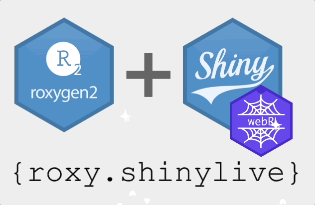

#' This is a super app constructor.
#' @param ... something
#' @return shiny app object
#' @examples
#' if (interactive()) {
#' my_super_app()
#' }
my_super_app <- function(...) {
...
shiny::shinyApp(...)
}
Continuing my exploration of WebR (see my previous post here), I’m happy to introduce a new tool for Shiny package developers - {roxy.shinylive}. The package is designed for anyone building their Shiny applications or modules as an R package. With just a few lines of code, you can easily embed an iframe to a Shinylive application based on the code from the “Examples” section of your documentation.
Typically, you might have something like this:
Now, let’s use @examplesShinyLive tag and make small adjustments to the example code to make it work in Shinylive:
#' @examplesShinyLive
#' library(mypackage)
#' interactive <- function() TRUE
#' {{ next_example }}
#' @examples
#' (...)Voilà! Now your documentation includes Shinylive app! As a result, the end-users are able to see your application in action without needing to install anything. This makes your package more accessible and closer to the end-users.
In addition, the package exports create_shinylive_url() function, which creates an URL based on the application code as a string. This opens up more possibilities, such as embedding application(s) in README files, vignettes or even outside of package documentation. Combined with knitr::knit_code$get("<chunk id>") and knitr::include_url(), you can reuse other chunk(s) code to embed iframes in RMarkdown or Quarto documents.
For a practical example of implementation, please see the documentation of teal.modules.general or teal.modules.clinical: a function documentation or a vignette. (Please note that it might take a while for WebR to download and install all the packages)
Special thanks to Sam Parmar from Pfizer - the author of the {lzstring} package, which makes encoding / decoding possible. Yet another example of cross-pharma collaboration!
PS. Yes - it’s coming to CRAN soon.
PS2. I’ve been also thinking about a similar solution for non-Shiny R codes. See this and this issues for more updates.
I’d love for you to try out {roxy.shinylive} and see how it can enhance your Shiny package development workflow. Whether you have feedback, suggestions, or feature requests, please feel free to file an issue on the https://github.com/insightsengineering/roxy.shinylive, or join our pharmaverse Slack channel to stay up to date and be part of the discussion.
Last updated
2026-01-23 18:37:11.816234
Details
Reuse
Citation
BibTeX citation:
@online{rucki2024,
author = {Rucki, Pawel},
title = {Roxy.shinylive - Shinylive Applications in Roxygen
Documentation},
date = {2024-10-11},
url = {https://pharmaverse.github.io/blog/posts/2024-10-11_roxy.shinyl.../roxy.shinylive_-_shinylive_applications_in_roxygen_documentation.html},
langid = {en}
}
For attribution, please cite this work as:
Rucki, Pawel. 2024. “Roxy.shinylive - Shinylive Applications in
Roxygen Documentation.” October 11, 2024. https://pharmaverse.github.io/blog/posts/2024-10-11_roxy.shinyl.../roxy.shinylive_-_shinylive_applications_in_roxygen_documentation.html.